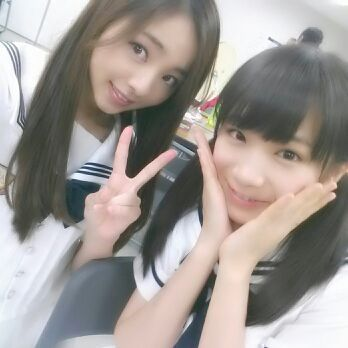
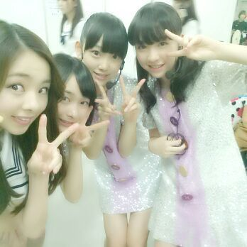

はいはいねーー( /〃▽〃)/
Rottyよぉ〜 。
今日は 幕張メッセで
全国握手会がありました。
今回は 真夏&真洋レーンでした！
私達は夏に生まれた女子だぁ♪

今日きてくださった皆さん )))
握手会に来ていただき
本当にありがとうございました\(・▽・)/
皆の声が聞けて嬉ちかった。
握手会前のミニライブでも
開場は広く ファンの方々も
たくさん集まってくださいました☆/
握手会のミニライブのわりには
いつもより、多く 曲を披露しました。
最後に全員で『人間という楽器』を
初披露しました^^
プラス、、、
２期生ちゃんが研究生となって
初めてのステージでした^^
曲は『走れ!Bicycle』と
『会いたかったかもしれない』
２期生ちゃんが
パフォーマンスしてるのを
ステージ裏で見てたよ^^
頑張ってました！
まだ、ダンスにぎごちなさがある所を
見ちゃったりすると
『教えてあげたいっ♪』
と思ったりもしてね\(´▽`)/てへ
分からないことがあれば
何でも頼ってねぇ〜ん♪
まひろ,あやね,みおな,みりあ

皆若いよっ(*^^*)
もちろんまひろも
まだ高校生だからねっ♪あは
ではではっ 今日は１日
おつかれさまでした(〃▽〃)
大好き..
おやすみなさい... Rottyより。